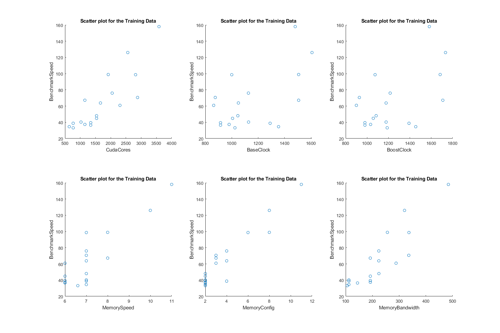
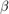
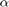

Exercise 2: Multivariate Regression
Submitted By: Prasannjeet Singh
Contents
Q1. Plotting
load Data/GPUbenchmark.csv; % Graph Labels: labelX = ["CudaCores", "BaseClock", "BoostClock", "MemorySpeed", "MemoryConfig", "MemoryBandwidth"]; labelY = 'BenchmarkSpeed'; features = GPUbenchmark(:,1:6); y = GPUbenchmark(:,7); hFig = figure(1); set(hFig, 'Position', [0 0 1500 1000]); for i = 1:6 subplot(2,3,i); scatter(features(:,i), y); title('Scatter plot for the Training Data'); xlabel(labelX(i)); ylabel(labelY); end snapnow; close(hFig);
Q2. Applying Normal Equation
It uses the same function as last exercise: normalEquation()
betaNormal = ExTwoFunctions.normalEquation(features,y)
betaNormal =
-48.0267
0.0224
-0.0226
0.0480
3.1747
3.8921
0.0130
Usign the above  to calculate the estimated benchmark:
testData = [2432, 1607, 1683, 8, 8, 256]; testDataOnes = [1, testData]; estimatedBenchmark = testDataOnes * betaNormal
estimatedBenchmark = 110.8040
As we know the actual result is 114, the percentage error will be:
errorNormal = (estimatedBenchmark - 114)*100/114
errorNormal = -2.8035
Q3. Gradient Descent
We will be using the same functions as before for this:
- gradientDescent(), and
- mseMultiFeature()
(a) Calculating cost for the normal equation:
costNormal = ExTwoFunctions.mseMultiFeature(features,y,betaNormal)
costNormal = 12.3964
(b) Gradient Descent using Feature Normalization
After a few tests, the  value chosen was 0.0001
a = 0.0001; normalFeatures = ExTwoFunctions.normalizeData(features); [betaGradient, ~, N] = ExTwoFunctions.gradientDescent(normalFeatures, y, a)
betaGradient =
65.1889
18.2820
-2.4444
10.4678
4.0357
10.4844
1.5298
N =
96310
Summarizing the hyperparameters:
- = 0.0001
- N = 96310
(c) Predicted Benchmark and Error
1. Predicted Benchmark
testDataNormalized = (testData - mean(testData)) ./ std(testData); testDataNormalized = [1, testDataNormalized]; predictedBenchmark = testDataNormalized * betaGradient
predictedBenchmark = 80.9072
2. Error Percentage
errorGradient = (predictedBenchmark - 114)*100/114
errorGradient = -29.0288